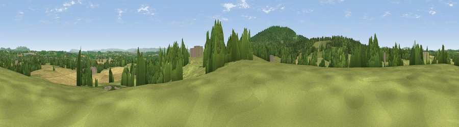

Viewpoint near Clifford's Mesne
#23813 in England · top 51% of its area beats it · near Clifford's Mesne · path 92 mWhere it is
The exact computed spot (SO 71375 24025). Click the marker for map links.
Public access: the nearest public right of way is about 92 m away — the final stretch may cross private land. Computed from Natural England's CRoW access layer and OpenStreetMap rights of way — not the legal definitive map. Always verify locally.
The view, rendered

A 360° render of this exact spot computed from the terrain model, tree cover and land cover — summer colours, afternoon light, calibrated against photographs of famous viewpoints. Real trees, hedges and buildings will differ in detail.
The panorama
Grey silhouette: terrain skyline in each direction (720 bearings, Earth curvature and refraction included). Dashed green: skyline with trees (+15 m) and buildings (+8 m) as obstacles. Blue strip: how far the ground is visible on each bearing.
Where the view opens
Wedge length = distance to the farthest visible ground on that bearing (vegetation-aware). Rings at 10, 25 and 50 km.
What fills the view
49% grassland · 28% woodland · 20% cropland · 2% built-up
Angular shares of the visible panorama (visual magnitude), not map area. Landscape diversity 0.48 (0–1 Shannon).
Key numbers
More beautiful places nearby
The staircase of upgrades: each row has a higher view potential than everything closer. Driving times are estimates from straight-line distance, calibrated against real road routing — check an actual route before setting out.
| Place | Direction | Drive | Score |
|---|---|---|---|
| Viewpoint near Clifford's Mesne | S · 2 km | ~5 min | 48.6 |
| Viewpoint near May Hill | S · 3 km | ~8 min | 56.9 |
| Viewpoint near May Hill | SSW · 3 km | ~8 min | 76.1 |
| Chase Wood Hill | W · 11 km | ~21 min | 77.6 |
| Chase End Hill | NNE · 12 km | ~23 min | 81.5 |
| Ragged Stone Hill | NNE · 13 km | ~24 min | 82.5 |
| Midsummer Hill | NNE · 14 km | ~26 min | 83.0 |
| Millennium Hill | NNE · 16 km | ~29 min | 86.9 |
51.91401, -2.41757 · source: screening · position refined by local search. Computed location — check access rights before visiting.